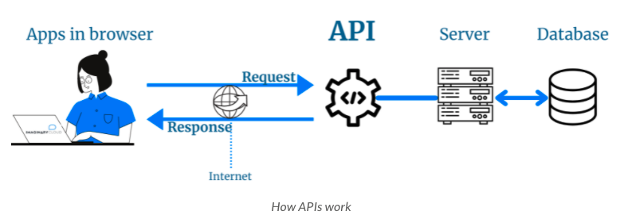
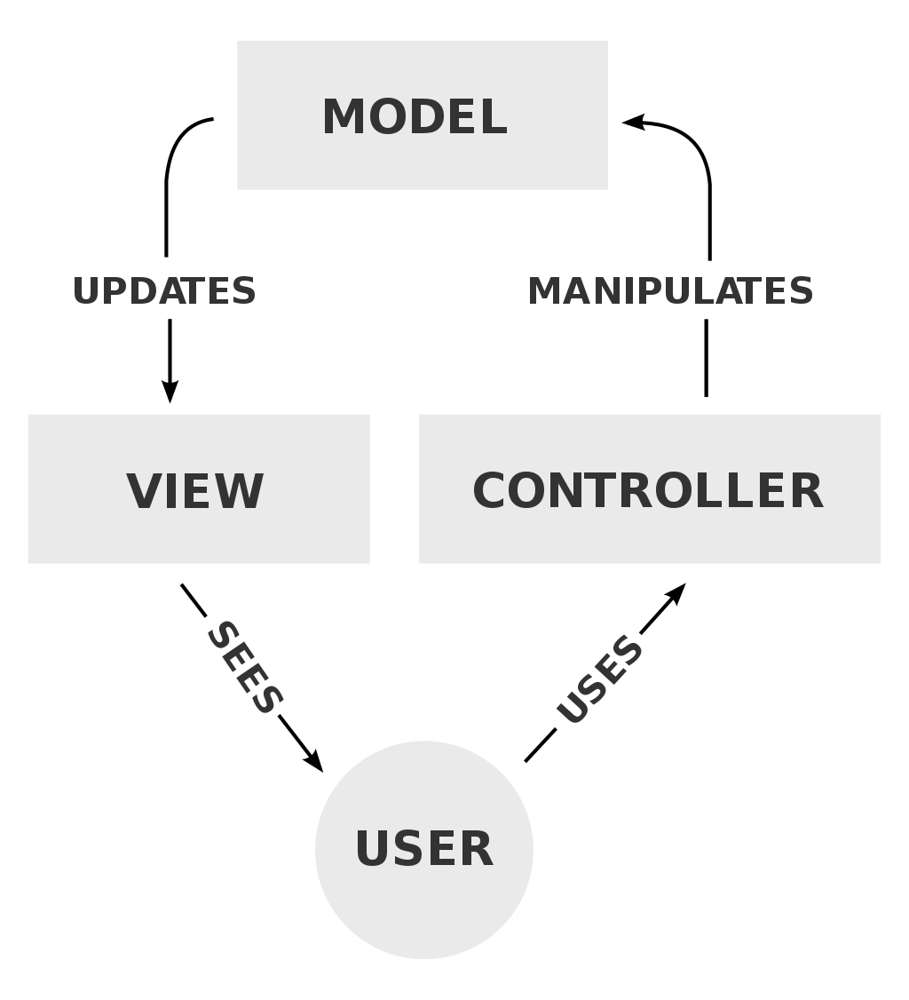

Software Engineering
Table of contents:
Computer Science
Program
Process
Modularity
Stream
Nodes
Pointers
Orphaned node
Singly linked list
Doubly linked list
Queues
Stacks
Computer Engineering
Real time operating system (RTOS)
Jitter
Three states of a task
Concurrency
Threads vs. tasks vs. processes
Threading
Scheduler
Preemptive multitasking
Cooperative multitasking
I/O-bound
CPU-bound
Parallelism
Thread pool executor
Race conditions
HTTP Terminology
Resource
HTTP
TCP
UDP
SSL
SSL Certificate
TLS
HTTP and TCP when opening a page
Types of HTTP methods
PUT vs. POST requests
Core elements in an HTTP request
Core elements in an HTTP response
HTTP status codes
URL
Routing
HTTP1.1 vs. HTTP2
LDAP
Intranet
Sources
Web Development Terminology
Front end
Back end
Web server
Protocol
Static vs. dynamic website
Responsive website
Application server
Database
Web API
Authentication
Authorization
Back-end frameworks
Events
Event handlers
Listeners
Sandboxing
Front-end Framework Terminology
Front End Framework
Requirements to display dynamic data
Templating
Mustaches
Directives
Components
Props
Three common states of a form field
DOM
Virtual DOM
Model view viewmodel pattern
Model view controller (MVC) pattern
Single page application (SPA)
Drawbacks to single page applications
Component based architecture (CBA)
CBA vs. MVC
Computer Language Terminology
Control flow
Side effects
Pure function
Programming paradigm
First class citizens
Module vs. package vs. library vs. framework
Utility functions
Optional arguments
Composition
Don’t repeat yourself (DRY)
Operator overloading
Wrapper
Sources
Computer Language Comparisons
Javascript vs. Python: Real world differences
Front-end usability
Back-end usability
Modules
Runtime
Run speed (performance)
Maintenance
Scalability
Cross-stage
Data science
Javascript vs. Python: Syntax differences
Numeric data types
Primitive data types
None vs. null
undefined
Built-in data structures - tuples
Built-in data structures - Lists vs. arrays
Built-in data structures - Dictionary (aka hash tables)
Logical Operators
User input
Switch/case
For loops
do...while
Number of function arguments
Object oriented programming
Constructors
Programming Paradigms
Declarative programming
Imperative programming
Imperative programming vs. declarative programming
Advantages to declarative programming
Procedural programming
Functional programming
Object oriented programming
Currying
Pros and cons of currying
Object Oriented Programming
Origin of OOP
Object
Four pillars of object orientation
Encapsulation
Abstraction
Inheritance
Polymorphism
Multiple inheritance
Abstract classes
Protected modifier
Private modifier
Software Architecture Terminology
Evolution of software decentralization
Service
Service-oriented architecture (SOA)
Core values of SOA
Categories of SOA services
Microservice
Microservice architecture
Persistence layer
Standard system architecture diagram
Three main api architectural models
REST
REST requests contents
REST response contents
Middleware
Benefits of middleware
Query language
GraphQL
Schema stitching
GraphQL vs. REST
Backend for Frontends Architecture
CDN
Docker
Containers
Virtual machine
Docker vs. virtual machine
Docker file
Kubernetes
Monoliths
Remote procedure call
gRPC
Protocol buffers
gRPC vs. REST
Database Programming
Object-relational mapping (ORM)
Pros and cons of ORM’s
Data access object (DAO) pattern
Software Testing
Test Runner
Mock
Stub
Test suite
References
Computer Science
Program
- A sequence of instructions in which data is manipulated by behavior
- Data: What the program knows
- Behavior: What the program can do with its data
Process
- An instance of a computer program being executed - what you see on the Activity Monitor
Modularity
- Programming paradigm in which a program is broken down into distinct parts, each with its own single piece of functionality
- Allows for scalability
Stream
- The sequential processing of data
- It’s preferable to stream because then you don’t need enough RAM to process everything at once. You also don’t need all the data onhand at the beginning
Nodes
- A data structure that contains data and links to other nodes
- The data can be null, integers, strings, arrays, or other data types
- They are a fundamental building block of many computer science data structures, including linked lists, stacks, queues, trees, and more
Pointers
- Links within nodes that point to other nodes
- If a pointer link is null, it means you’ve reached the end of that particular node or link you were following
Orphaned node
- When a node link is removed and then links to subsequent nodes that are linked are also lost
- Instead, if deleting the pointer from node a to node b, and node b points to point c, then you may want to re-link node a with node c
Singly linked list
- The data structure that’s created when linking together nodes using the nodes they’re linked to
- They are versatile, useful, and simple
- They are a good alternative to arrays when trying to store information linearly
- When you remove a node in the middle of a chain, you need to add a connection between the nodes it connects to
Doubly linked list
- Like a singly linked list but also has a link to the node before it
- They also usually have a tail_node property
- This allows you to iterate as quickly backward through a list as you can forwards
- Example: a subway
Queues
- Linear collection of nodes that adds nodes to the tail and removes them from the head
Stacks
- Pushes data to the top of the stack and pops data off the top as well
Computer Engineering
Real time operating system (RTOS)
- An OS that processes data and events with critically defined time constraints. All processing occurs within these constraints
- They guarantee a deterministic time deadline
- Has specialized scheduling algorithms to reduce interrupt latency and thread switching latency. They prioritize how quickly and predictably (less variation in this time) they can deliver results as opposed to how much work they can do in a given time
- Note: this is different from a time sharing operating system like Unix
Jitter
- The variability in time it takes to accept and complete an application task
- A RTOS has less jitter; they don’t give late answers
Three states of a task
- Running: currently executing on CPU
- Ready: ready to be executed
- Blocked: waiting for an event, i.e. I/O
- Note: tasks are usually in Ready (waiting for their turn to run since only one task at a time per CPU) or Blocked
- A queue is used to line up ready tasks. This gets into various algorithms and data structures like linked lists
Concurrency
- Things occurring simultaneously
- In computing, there are many names for things occurring simultaneously. These include thread, task, and process
- Useful for CPU-bound and I/O-bound problems
Threads vs. tasks vs. processes
- At a high level, these are all the same thing. They can be stopped at certain points, their state saved, switched to different ones, and then restarted where it was interrupted
Threading
- It allows you to have different parts of a program run concurrently. It can also simplify program design
- A thread is a sequence of programmed instructions that can be managed and executed by a scheduler
- Example: two threads running on one processor

Scheduler
- A process that does the assignment of resources to perform tasks
- Example resources: processors, network links, or peripherals (i.e. inputs on a PCB)
- Example tasks: Threads, processes, or data streams
Preemptive multitasking
- Using an interrupting mechanism to suspend currently executing process by using a scheduler to determine what process to execute next
- As such, every process needs some amount of CPU time at a given time because the OS knows about each thread
- The OS can interrupt a thread at any time to begin running a different thread
- Python: used by threading
Cooperative multitasking
- Concurrency in which the OS never initiates a context switch from one process to another. Instead, processes voluntarily give control based on predetermined logic or if they are idle/blocked
- It requires all programs to cooperate for this scheduling to work
- The scheduler is much less active than in preemptive multitasking - it just starts processes and then lets those processes voluntarily return control back to the scheduler
- Note: the scheduler does not need to allocate CPU to every thread because it doesn’t need to know about them
- Note: it’s rarely used in modern larger systems but commonly used in memory-constrained embedded systems memory-constrained. It’s much simpler + quicker to implement because execution of processes never gets unexpectedly interrupted by a scheduler
- Note: A poorly designed program can hog all the CPU and cause the system to hang. This is not scalable for servers
- This can be alleviated by setting a watchdog timer or a hardware reset if something hangs for too long
- Also known as non-preemptive multitasking
- Python: used by asyncio
- Javascript: it’s what’s going on with await because it’s using a single threaded event loop during runtime
I/O-bound
- When a program is slowed because it frequently needs to wait for i/o from an external resource (api calls, hardware, your file system, etc.)
CPU-bound
- Programs that are slow because they need to do a significant amount of computation without calling some i/o or accessing a file
- As such, the resource limiter of your program is CPU speed, not the network or file system
- NOTE: multithreading does not speed up a CPU-bound process. It actually slows it down. This is because for those examples there’s no waiting, and there’s extra overhead on the cpu
- NOTE: Parallelism does speed up CPU-bound processes because you can share heavy workloads across multiple CPU’s
Parallelism
- When each program (a collection of resources + memory) runs on a different core. As such, they can literally run at the same time
- This sometimes arises some other complications
- Python: done by multiprocessing. Each process runs in its own interpreter
Thread pool executor
- An object that creates of pool of threads that can run concurrently. The executor then controls how and when each thread runs
- Standard ThreadPoolExecutor libraries often handle this
Race conditions
- Subtle multi-threaded specific bugs that occur when data access is not protected enough to prevent threads from interfering with each other
https://en.wikipedia.org/wiki/Real-time_operating_system
https://realpython.com/python-concurrency/
https://en.wikipedia.org/wiki/Preemption_%28computing%29#Preemptive_multitasking
HTTP Terminology
Resource
- Anything that’s on the web, including HTML files, stylesheets, images, videos, and scripts
- They are provided to your browser from servers via HTTP requests
HTTP
- Hypertext Transfer Protocol - structure for requests and responses over the internet from one point to another
- Versions:
- HTTP/1.1: Sends messages in the form of text. Slowest and first HTTP version
- HTTP/2: Transmits all messages in binary rather than plain text
- This allows for more-efficient data transmission techniques such as smaller packets of data
- Also allows a single TCP connection to be made for communicating. HTTP/1.1 requires multiple
- HTTP/3: An evolved version that better-handles lost packets
TCP
- Transmission Control Protocol - the transfer of resources.
- TCP is what manages the channels between client and server while HTTP is the language that devices on both sides of the connection follow
- Lets two hosts connect and exchange data streams + exchange data in the same order they were sent
- It’s remarkably reliable and error-free
- Note: it does not have any encryption security. This is why TLS is also used
UDP
- User Datagram Protocol: a less-common transport protocol
- Differs from TCP in that it doesn’t require handshaking. There is no guarantee of messages being delivered, or being delivered in the right order
- It’s quicker than TCP because of this - is better when you need to read data quickly i.e. video streaming
SSL
- Secure Sockets Layer: an encryption protocol for internet communications
- Developed by Netscape
- Has been deprecated in favor of TLS, which evolved from it
SSL Certificate
- A data file hosted in the website origin server that make SSL/TLS encryption possible
- They hold a public key for the website along with the website identity and other metadata (domain name, who it was issued to (typically a company), issue date, expiration date, who issued it, and other info)
- They have a secret and secure private key as well
- Devices that communicate with the website reference the SSL Certificate file to get the public key to verify the server identity
TLS
- Transport Layer Security: a popular security protocol for secure data transmission
- It evolved from SSL - but is basically the same thing with a couple minor changes. SSL still has a ton of name recognition and people just refer to it as SSL/TLS
- Websites that have SSL/TLS implemented have HTTPS (HTTP Secure) instead of HTTP. This means that web traffic to it is encrypted
HTTP and TCP when opening a page
- When you type in a URL in the browser (client), a request to open a TCP channel is made to the internet domain name server that hosts that URL
- The domain name server then returns an IP address to the destination to the client. The client then opens a TCP connection to the server at that IP address and makes a request (i.e. GET)
- The server will respond with a
- After the server sends the response, it closes the connection
- If something new is requested to the server, a new TCP connection is opened and the process is repeated
Types of HTTP methods
- GET: retrieve information from a source
- POST: Submit information to a source. Source will process the info and send it back
- PUT: Creates new information or replaces something that’s already there
- DELETE: Deletes information
PUT vs. POST requests
- Idempotency is the ability for an operation to get called multiple times without changing the outcome more than on the first time
- PUT requests are idempotent. PUT differs from POST as successive POST requests will create duplicates - it’s like placing an order multiple times. Successive PUT requests replace each other
- A POST will often return a new generated id; a PUT assumes you already know the id or some info about what’s being modified
- PUT vs. POST is also a convention (for code readability): PUT is to modify existing resources. POST is to create a new one
Core elements in an HTTP request
- HTTP method
- Path, i.e. https://quinncoyle.com/
- HTTP protocol version: HTTP/1.1, HTTP/2, HTTP/3
- Headers: optional fields to give additional information
- Body: optional if data is required to be sent to the server (i.e. in POST, PUT, PATCH)
Core elements in an HTTP response
- HTTP protocol version
- Status code
- Status message
- Headers
- Body
HTTP status codes
- Numbers that indicate whether a request has been completed successfully
- Five classes are:
- 100-199: Informational
- 200-299: Successful
- 300-399: Redirection
- 400-499: Client error
- 400 is bad syntax
- 401 is unauthorized - unauthenticated
- 403 is forbidden: differs from 401 in that the client’s identity is still known to the server. Note: sometimes servers send a 404 instead of a 403 in this case to hide the existence of a resource from a client
- 404: Not found. For a browser this means the URL isn’t recognized. For an api, it means the resource doesn’t exist
URL
- Uniform Resource Locator - important for both websites and queried API calls
- Can be broken down into the below:
- Protocol: HTTP or HTTPS
- Domain: i.e. quinncoyle.com. Unique reference to identify website on internet
- Path: A specific file or directory on the web server
- Sometimes there are additional path parameters in api’s as well, i.e. /users/15 is the user with id number 15
- Query: A way to filter parameters for more-specific resource requests
- Prefixed by a ? and key value pairs can be separated by &
- Common when there’s dynamic content on the page
Routing
- The process of handling requests (i.e. http) depending on the information provided in the request
- For instance, handle a GET method differently than a POST method
HTTP1.1 vs. HTTP2[a]
- HTTP 1.1: Uses a request-response model for communication
- If a microservice gets multiple requests from multiple clients, the model needs to handle each request at a time. This makes the whole system slower
- REST API’s are typically built on HTTP1.1
- A protocol that uses a client-response communication model instead of request-response
- Requests don’t need to be handled each at a time. This allows for better streaming communication and bidirectional support
- Can receive multiple requests from multiple clients simultaneously
- Can also handle request-response requests like in HTTP 1.1
- gRPC is built on HTTP2
- Note: REST API’s can also be built on HTTP 2, but still requires a request-response model. This negates a lot of the advantages of HTTP2
LDAP
- Lightweight directory access protocol - an industry standard application protocol for accessing and maintaining distributed directory information over an IP network
- Examples: a corporate email directory, a telephone directory, or central place to store usernames and passwords so that many apps can connect to the LDAP server and validate users
Intranet
- A computer network within an organization that excludes access by outsiders
- Usually done over LANs and WANs - some modern intranets have their own search engines, user profiles, blogs, mobile apps, and event planning apps
- Still uses most of the same technology that the internet protocol uses
- It’s in contrast to public networks like the internet
- Benefits
- Higher worker productivity
- Communications
- Workflow
- Avoid keeping info as paper
- Collaboration
- Common corporate culture
- Employee engagement
Sources
Web Development Terminology
Front end
- Parts of a website that users interact with and see
- Typically composed of JavaScript, CSS, HTML, and other static components like images and videos. These don’t change.
- Also known as client-side development
Back end
- All of the behind-the scenes processing and data to make a website function
- Sends the proper resources to clients
Web server
- Code running on a remote computer that listens for incoming requests and sends back responses
- Every website has at least one web server
- When you navigate to a page on the browser, you are making a call to a web server
- Interact with web servers via protocols
Protocol
- Format of requests and responses to web servers
- HTTP is the protocol used to access websites
Static vs. dynamic website
- Static: a single request is made by a client and the server sends back a response containing everything that’s needed to view the website
- Analogy: Ordering takeout
- Dynamic website: When the back end holds logic to decide which assets to send and then sends them
- Lots of today’s web applications cater specifically to the user, i.e. your news feed
- Typically use databases. Website accesses info from the db - i.e. if you update a database record the web page changes
- Analogy: sitting down at a restaurant. Lots of back and forth
Responsive website
- Websites that look different on each device - typically depending on screen size
Application server
- The collection of logic needed to deliver dynamic content to a client
- This includes security, payment processing, and tailored advertisements
Database
- Collections of information found on the back ends of modern web applications
- A common architecture looks like:
- Can be divided into two types:
- Relational: information stored in tables with columns and rows
- Examples: MySQL, Postgres
- Non-relational (NoSQL): stores info using key-value pairs or other formats
Web API
- Application Programming Interface: A set of consistent defined rules for interacting with a web application, typically through HTTP requests and responses. Specifies:
- Types of requests
- How to make those requests
- Which data formats to use
- They’re a software middleman that specifies rules for apps to talk to each other
[b]
Authentication
- Validating the identity of a user
- Techniques:
- Usernames/passwords. Requires securely storing credentials on an encrypted database
- Using external sources i.e. login with Google
- Facial recognition i.e. your phone
Authorization
- The logic of controlling who has access to what resources and abilities on a site. For example, anyone can view your facebook profile page but only you have the ability to change it
Back-end frameworks
- Predefined ways to write, maintain, and scale web applications
- Aka server-side web frameworks and web application frameworks
- Some features
- Route requests to the appropriate resource, i.e. to a distinct URL
- Work more-easily with databases
- User authorization
- Work with HTTP requests and responses
- Render and format data (i.e. from HTML, JSON, XML)
- Security against attack (i.e. a DoS attack)
Events
- Actions that occur in the system, i.e. if a user presses a button or resizes a window
Event handlers
- Functions that can be attached to elements to perform a specific task
- You can only assign one event handler to an element in Javascript. A second one will override the first one
Listeners
- Functions that attach event handlers (i.e. a changeColor function) to a specified element
- In Javascript, the addEventListener() method is commonly used to do it
- You can assign as many event listeners as you want in Javascript
Sandboxing
- Isolating some applications from others
- For instance, the browser on a computer only has limited access to the user’s filesystem so sites can’t manipulate it. Browsers are sandboxed
Front-end Framework Terminology
Front End Framework
- Javascript libraries that allow complex apps to be built quicker, easier to update, and quicker for users
- Important features
- Rendering + updating dynamic data
Requirements to display dynamic data
- A place to store the data being displayed
- A syntax to display the dynamic information
Templating
- Content that should be substituted - usually by a variable value - inside the HTML
- Makes code much easier to read and write than using vanilla JavaScript to select and update specific HTML elements
- Templates still contain all of the hard-coded information on the site
Mustaches
- Templating was popularized by the mustache framework. As such, two sets of curly braces commonly used for templating are known as mustaches
Directives
- Custom HTML attributes that serve more-complex front end operations behind the scenes
- They make complex code easy to read, write, and optimize
- You can also make your own
- Used in Angular and Vue
Components
- Custom reusable HTML elements provided as templates for what should be rendered when the component is used
- Eliminates the need for copy-pasting HTML code and the code maintainability issues that come with it
- Components exist in the same space but react independently: they have their own methods and api’s. They can make their own calls to the server
- Examples:
- A FB chat window
- A comment feed
- A friends list
Props
- Stands for properties: dynamic information fed into a component
- They look like normal HTML attributes when added to HTML code
Three common states of a form field
- Untouched: nothing has been typed in
- Touched: information has been filled in
- Invalid: fails submission
DOM
- Document Object Model: a representation of a webpage created by and stored in the browser
- The DOM sits between the HTML and the display on your screen; the browser transforms the HTML to what we see on screen
- DOM is stored as a tree-like structure in which each HTML element is a node in the tree
- Anytime the browser detects a change to the DOM, it repaints the whole page using a new DOM version. This takes time, but repainting the page is quicker than determining what has changed between two DOM’s
- Codecademy visual:
Virtual DOM
- A copy of the DOM stored in memory as a Javascript Object
- Making and comparing changes to Javascript objects is much faster than directly comparing DOM’s
- Use by frameworks provides page performance benefits including:
- Preventing un-needed repaints
- Repaints are limited to the elements effected
- Groups together repaints. One user interaction → one repaint, instead of repainting the whole page multiple times
Model view viewmodel pattern
- An architecture pattern that separates the view from the model by a viewmodel: a converter that converts data objects from the model by handling the displaying logic
- The view model uses a binder to display the current state of the data in the model
- The binder allows the developer not to have to write boilerplate code to keep the view model and the view in sync
Model view controller (MVC) pattern
- A user interface design pattern that divides a program into the model, view, and controller elements
- Element descriptions
- Model: manages data, logic, and business rules. It’s the logic of the program and is independent of the UI
- View: the information shown on screen
- Controller: Takes in inputs, validates them, and converts them to commands for the model. Responses to invalid inputs go back to the view
- Analogy: eating at a restaurant. You have a waiter who takes the order. Waiter gives orders to cook. Cook gives food to the waiter. Waiter gives food to presenter, and presenter serves your food

Single page application (SPA)
- An app or website that never refreshes the page; all necessary page code is retrieved by the browser on page load
- Necessary resources (i.e. from a DB) are dynamically loaded and added to a page as necessary
- AJAX is the most common way to do it
- Allows for faster page transitions and a better user experience
- Most modern web frameworks including Angular and React have adopted SPA principles
Drawbacks to single page applications
- SEO: hashed URL’s inside javascript code are invisible to search engine crawlers. Therefore SPA’s are not commonly used in pages where search engine indexing is required
- Difficulties with browser history; only the original hit gets registered. Additionally the page won’t return to where you left off but instead resets
- Analytics (i.e. Google Analytics) are harder because they rely upon new pages loading
- Can be more vulnerable to data exposure and other security risks
Component based architecture (CBA)
- A way to encapsulate pieces of a bigger UI (the components) into independent micro systems that are able to work well together
- Components consist of a single JavaScript class with a nice clean interface. The controller (router) is part of the component.
- Using the Virtual DOM, components can refresh themselves independently
- Modifying one component should not affect any components that use it - they’re completely decoupled. Should only affect the data that’s passed to it and no side effects
- Components can be tested individually
- Allows for more control and customization over applications
CBA vs. MVC
- How responsibilities are split: MVC is horizontal, CBA is vertical
- MVC: the helper functions, helper function services, and routing are all at different levels of the app’s architecture
- CBA: All helper methods and logic are at the same architecture level inside the class
Computer Language Terminology
Control flow
- The specific order in which statements, functions, or instructions are executed
- Categories include conditional branches (if/else and case/switch), loops until a condition is met, exceptions, and stopping the program
Side effects
- If a state variable is modified outside of the local environment
- In other words, if the function has “an observable effect other than returning (return) a value to whatever invokes the function”
- Examples: non-local variables, changing a static variable, changing a mutable variable passed into the function, or calling I/O
Pure function
- When a function has no side effects
Programming paradigm
- Classification of programming languages based on their features
- Paradigm = a method to solve a problem or do a task
First class citizens
- When in a language, functions (or objects, data types, etc.) are allowed to be bound to variable names, passed as arguments, and returned from other functions like any other data type
Module vs. package vs. library vs. framework
- Module: A file with code in it. Set of functions that is used somewhere else
- Package: Collection of modules which all serve the same purpose
- Library: Collection of packages. Offers a related set of functionalities used
- Does not force a coding style on you
- Framework: Collection of libraries. Also gives an architecture for the development.
- Code is integrated into a framework. You don’t “include” it like you would a library
- Forces a coding style on you
Utility functions
- Functions used to maintain code and debug parts of a program
- They don’t add new functionality
Optional arguments
- Note that in the documentation for many programming languages, optional arguments are placed in [square brackets]
- I.e. app.use([path,] callback [, callback...]) in the express docs
Composition
- The combination of objects or data types into more complex ones
- In OOP: a class that references objects of other classes in instance variables
- Has-a relationships (i.e. car has an engine)
Don’t repeat yourself (DRY)
- Use functions and object oriented programming for reused code when possible
- Combine similar similar tasks in the same element, even if code does not directly repeat itself
- For example, combine the below into addNumber()
const addFive = number => {
const fiveAdded = number + 5;
console.log(`Your number plus 5 is ${fiveAdded}`);
}
const addTen = number => {
const tenAdded = number + 10;
console.log(`Your number plus 10 is ${tenAdded}`);
}
const addTwenty = number => {
const twentyAdded = number + 20;
console.log(`Your number plus 20 is ${twentyAdded}`);
}
const addNumber = (number, addend) => {
const numAdded = number + addend;
console.log(`Your number plus ${addend} is ${numAdded}`);
}
Operator overloading
- When working with different object types different functionalities occur
- For example: in Python the + operator handles int, str, and list differently
# For an int and an int, + returns an int
2 + 4 == 6
# For a string and a string, + returns a string
"Is this " + "addition?" == "Is this addition?"
# For a list and a list, + returns a list
[1, 2] + [3, 4] == [1, 2, 3, 4]
Wrapper
- Programs or code that wrap around other program components - usually for compatibility between different software structures or for visual outputs (HTML and CSS wrappers)
- Helps us create different versions of the same functionality without duplicating code
- The wrapper itself is the only component that communicates with both parts of the program
- Broad definition that can include:
- Individual software modules/frameworks
- Independent software products
- Software architectures
- OOP classes
- Use functions/code of a different programing language with your own code, use a wrapper between the different programming language and what you have
- Wrapper to translate user input - i.e. an input wrapper for the european version of your product which uses commas instead of decimals for number inputs. The wrapper then translates the commas to decimals
- Database access: I.e. JDBC (Java Database Connectivity - made by Oracle), which takes in SQL queries and then JDBC converts the queries to the necessary database query language. It then returns results as Java objects that are always the same format - regardless of the underlying database used
- HTML wrappers: use a div as a wrapper to hold the entire page content (i.e. with new associated CSS styling) as an easy way to make changes to the page without touching any other HTML/CSS code
- TCP wrappers in Linux systems: receives network requests without talking directly to individual services
- Python example: a class and its wrapper
class Customer:
def __init__(self, name, age, address, phone_number):
self.name = name
self.age = age
self.address = address
self.phone_number = phone_number
class CustomerWrap(Customer):
def __init__(self, name, age, address, phone_number):
self.customer = Customer(name, age, address, phone_number)
def display_customer_info(self):
print('Name: ' + self.customer.name)
print('Age: ' + str(self.customer.age))
print('Address: ' + self.customer.address)
print('Phone Number: ' + self.customer.phone_number)
customer = CustomerWrap('Dmitri Buyer', 38, '123 Python Avenue', '5557098603')
customer.display_customer_info()
# Output
# Name: Dmitri Buyer
# Age: 38
# Address: 123 Python Avenue
# Phone Number: 5557098603
Sources
Computer Language Comparisons
Javascript vs. Python: Real world differences
- While both can be used for the front end, JavaScript is much more widely used. This is because it’s universal and it’s easy to use. It’s the only programming language natively supported by web browsers
- Both Python and Javascript (Node.js) are two of the most used and back-end languages
- Python has lots of modules. Everything included
- Non Node.js Javascript has very few modules. Only some like date, math, regexp, and JSON. It gets most of its functionality through the browser environment
- Python is an interpreted language
- Javascript is an interpreted language, but when using node Google’s V8 engine compiles JS to native machine code before executing. This increases performance. So it seems to depend on how you execute it
- JS is much faster than python. Python has a single code flow, which can make it take longer to process requests
- Python is an easier language to maintain than JS because it is better designed. It emphasizes code readability and maintainability but it’s more expressive
- Python does not support multithreading.
- JS (using Node.js) uses different modules and can work asynchronously for multithreading. This makes it more scalable. It also has had more frameworks developed as it becomes more popular
- Both are dynamically typed - they check types at runtime. Therefore you don’t need to declare a variable’s type
- Note: for bigger programs this can become an issue for maintenance as it’s less secure. It also makes it harder for people and editors alike to understand the code
- Both languages are cross-stage: a developer can create one app that works on MacOS, Linux, and Windows
- With the packages available and its native support of more data types, python is much more widely used for data science
Javascript vs. Python: Syntax differences
From https://www.freecodecamp.org/news/python-vs-javascript-what-are-the-key-differences-between-the-two-popular-programming-languages/
- Python has 3: int, float, and complex
- JS has two: Number (includes integers + floating point values, theres no int in JS) and BigInt
- Python has 4: int, float, bool, and str
- JS has six: undefined, Boolean, String, Number, BigInt, and Symbol
- Python uses None to indicate no value for a variable
- JS use null instead
- Python has no such thing. You must assign an initial value.
- JS, you can declare a variable without assigning an initial value. Its value is undefined
Built-in data structures - tuples
- Python: it’s like a list but it’s immutable. Use it to store data that shouldn’t be modified
- JS: No built-in data structure that does this. You can make a similar structure if you want
Built-in data structures - Lists vs. arrays
- Python: Lists store a sequence of values. Can be modified and manipulated
- JS: A Javascript array is the same thing as a python list
Built-in data structures - Dictionary (aka hash tables)
- Python: This is a built-in data structure where key value pairs can be created
- JS: No built in data structure for hash tables
- Python: and, or, and not
- JS: &&, ||, and !
- Python: input = input(“Enter a value”). Displayed in console
- JS: input = window.prompt(“Enter a value”) will be displayed on the browser
- Python: Does not have this type of control flow
- Javascript: Switch
- Python: can use for i in range(n): or for iterables, for elem in iterable:
- JS: need to explicitly give start value, end value, and iterator. For iterables, you can do for (var elem of iterable) { } and for objects, can do for (const property in object) { console.log(property, object[property]);
Number of function arguments
- Python: # of arguments must equal function definition. It will error otherwise
- JS: you can do the below:
Object oriented programming
- Python: yes, using class
- JS: yes, using class
- Python: it’s __init__ . Is called automatically when an instance of the class is made, and its parameters list is the values we pass in to create the instance. The first parameter of the list is self
- JS: See Constructor
- Referring the calling object
- Python: self.attribute = value
class Circle:
def __init__(self, radius, color):
self.radius = radius
self.color = color
def calc_diameter(self):
return self.radius * 2
- JS: this.attribute = value
class Circle {
constructor(radius, color) {
this.radius = radius;
this.color = color;
}
calcDiameter() {
return this.radius * 2;
}
}
- Create instances of a class
- Python: my_circle = Circle(5, "Red")
- JS: my_circle = new Circle(5, "Red");
Programming Paradigms
Declarative programming
- A programming paradigm that’s based off of what the program should accomplish and doesn’t describe its particular control flow
- Describes what the problem must accomplish rather than how to do it
- Common examples: database query languages, regular expressions, and functional programming
- Note: Most declarative programming has some underlying imperative abstraction layer. You assume some prior knowledge
- Includes SQL and HTML
Imperative programming
- Programing paradigm in which statements change a program’s state, focusing on how a program operates
- Note: hardware implementation for all computers is imperative (machine code)
- Includes procedural programming and object oriented programming. C, C++, Java (note: since Java 8 it can also be declarative)
Imperative programming vs. declarative programming
- Imperative is a focus on how to get to the result by listing out the steps to show how to get there. Declarative is concerned with what you want, and it’s up to the language syntax to get you there
- Example: directions to your house
- Imperative: go north out of the parking lot, take a left, get on I80 until exit 34, …
- Declarative: my address is 100 Main St, Truckee CA 95950
- Javascript, C#, Go, and Python can be a mix of imperative and declarative
Advantages to declarative programming
- Helps minimize or eliminate side effects
- Code is more readable
- Program can be context independent, allowing for better code reuse. Whereas often Imperative programming, by definition, relies on the context of the current state
Procedural programming
- Data and behaviors are spread out into the same set of instructions
- The order of code matters, and data is changed directly as the program carries out its behavior
Functional programming
- A programming style in which programs are constructed by the composition of functions
- The data and behavior are kept separate. Data is never mutated directly. We rely on pure functions to return new copies of updated data
- Functions are in a tree format, rather than a bunch of imperative statements that update a state variable
- Functions are first class citizens
- It’s a subset of declarative programming
Object oriented programming
- Data and behavior are kept together in objects
Currying
- A functional programming technique used to write modular, reusable, easy-to-test, and easy-to-read code
- It’s declarative, uses immutable variables, and emphasizes pure functions
- Example format in Javascript:
fakeFunction('param1', 'param2', 'param3'); // Non-curried
fakeFunction('param1')('param2')('param3'); // Curried
Pros and cons of currying
- Helpful in more complex applications as an architectural tool for better scaling
- A great way to check that you have all inputs before proceeding
- Identify errors faster - improper function inputs, not enough inputs
- Makes code easier to read - can write functions that just handle one task
- Make code more modular
- Tends to be a more advanced topic
- It can be bad when you have a ton of steps and the nest would get super deep and hard to read
Object Oriented Programming
Origin of OOP
- As computers became more powerful and programs became more complex, languages evolved to have:
- Better organization
- Fewer bugs
- Better maintainability
Object
- Special entity in code that combines data and behaviors in an easy-to-use container
- When we want to access the data or change the behaviors, we do so through the objects
Four pillars of object orientation
- Encapsulation
- Abstraction
- Inheritance
- Polymorphism
Encapsulation
- An object’s ability to bundle together related data and behavior
- It lets this data and behavior be easy to use by other parts of the code
- It also prevents code outside of the object from seeing how the object works or modifying it in its own ways
- It lets the object choose how it wants to interact with other code and what it wants to expose to the world
- Languages accomplish this with access modifiers like public, protected, and private. Some languages don’t have them
- Example implementations:
- Access modifiers
- Getters/setters
Abstraction
- The ability to hide complex logic from the user behind the object interfaces
- With classes, the people that use them don’t need to know anything about implementation details
- Example implementations:
- Class interfaces
- The constructor interface
- Abstract classes
Inheritance
- Lets a class inherit all of the functionality of another class
- This greatly reduces code reuse
- I.e. having a Task and a DeadlineTask class. DeadlineTask can inherit all attributes and functionality of Task
- Example implementations
- super classes, super super classes, etc.
Polymorphism
- “Having multiple forms” - when we use inheritance we are taking advantage of this
- If we have two objects: myTask and myDeadlineTask - we now have a Task data type and a DeadlineTask data type. Because DeadlineTask inherits Task - in addition to myDeadlineTask being a DeadlineTask data type it’s also a Task data type. Hence, taking on multiple forms
- Example implementations
- Using the above example: any code designed to work with a Task object can also work with a DeadlineTask object. Anywhere one goes, the other can also go
- As such, polymorphism is what allows us to use these two types of objects interchangeably
- Calling a method of a super class while not needing to know the exact class this method is being called on. This can be super powerful
- This is because the class the method is being called on can take on multiple
Multiple inheritance
- When a subclass inherits from multiple super classes
- Types:
- Multiple levels of inheritance (i.e. a super class and a super-superclass)
- A subclass that inherits directly from two classes and can then use the attributes and methods of both of them
- Note: Care needs to be taken here in case multiple super classes share the same function or object names. Different languages handle this differently
Abstract classes
- Classes that cannot be instantiated but can be inherited from
- Why it’s powerful: when a program starts to get big, classes can start to share functionality or we might lose sight of why a class’ inheritance structure exists. As hierarchies get bigger, abstraction lets us avoid:
- Overlapping functionality
- Leaving out functionality
- For example, a parent class might define an abstract method which means that method needs to get defined in each child class or an error will be thrown
- See example in https://quinncoyle.com/notes/python/
Protected modifier
- Variables or members visible only to the class they belong to, in addition to any sub classes
Private modifier
- Variables or members visible only to the class they belong to
Software Architecture Terminology
Evolution of software decentralization
- Some see the following as a general evolution - the order is not exact:
- Distributed computing → modular programming → SOA → microservices → mashups (web app that uses content from multiple sources in a single interface) → SaaS → cloud computing (use of computer systems, typically data storage and computing power, without direct active management by the user)
Service
- A discrete unit of functionality that can be accessed remotely and updated anytime
- Can be combined and reused in production applications
- Three components:
- Interface: how the service will respond to client requests
- Contract: how the service and client interact (api)
- Implementation: the service code
- It’s logic represents a repeatable business activity with a specific outcome (i.e. process a credit card payment)
- It’s self-contained: acts independently from its execution environment
- It’s clients are 100% abstracted from its inner workings (interface is separate from implementation)
- It can be composed of other services
- Statelessness: services either return a requested value or give an exception
Service-oriented architecture (SOA)
- A software architecture style in which separately maintained and deployed software components communicate together over a network
- Protocols are used to describe how data is transmitted
- An API can be thought of as the service, while SOA is the architecture that allows the service to operate
- Inherited some of its philosophies from object-oriented programming
Core values of SOA
- Business value > technical strategy
- Strategic goals > project-specific benefits
- Interoperability > custom integration
- Shared services > specific-purpose implementations
- Flexibility > optimization
- Evolutionary refinement > time spent on initial perfection
Categories of SOA services
- Business services: specific business functions. Also known as application services. Four major types
- Get information stored in databases (i.e. aircraft data)
- Typically nouns
- Coarse-grained generic business capabilities (i.e. schedule a flight)
- Typically verbs
- Finer-grained specific business capabilities (i.e. assign a seat)
- Typically verbs
- Contain business logic to couple entity services with capability/activity services
- Infrastructure services: provide technical functionality to allow business services but don’t add direct business value
- Examples: Integration services (i.e. with Tableau), authentication, event logging, and exception handling
Microservice
- A self-contained piece of business functionality with specified interfaces
- It should do one thing and do it well
- A difficult decision can be how big a microservice should be. Amazon’s often-cited 2 pizza principle is that services are often the size of 3-10 engineers
- Note: there’s no concrete definition of when a service becomes a microservice
Microservice architecture
- A type of SOA in which an application is a collection of loosely-coupled fine-grained lightweight services
- Has allowed organizations to grow quickly, become big, and allow users to use their services easier
- Note: the cost of this flexibility is overhead required to maintain the decoupling
Persistence layer
- Also known as the data access layer, the layer that handles the persistence (writing to storage) and retrieval of data
- The purpose is that the business logic is independent of how you store the data
- Its logic has to be database-specific. If you switch databases (i.e. SQL to MongoDB) then a new persistence layer is needed but the business logic layer stays in-tact
Standard system architecture diagram

Three main api architectural models
- REST API (most common)
- RPC
- GraphQL
REST
- Representational state transfer - an architecture style for standards between computer systems
- Data is passed via JSON or XML format
- Core principles:
- Separation of client and server: either can be changed at anytime and the operation of the other shouldn’t be impacted
- Statelessness: any new messages can be understood without previous messages
- Communication done using standard HTTP requests
REST requests contents
- HTTP verb
- A header: the client must send the type of content that it can get from the server in the accept field. These are known as types, with the subtype specified after a /. Common ones are:
- text: text/html, text/css, text/plain, text/json, text/xml
- image: image/png, image/jpeg, image/gif
- audio: audio/wav, audio/mpeg
- video: video/mp4, video/ogg
- application: application/json, application/pdf, application/xml
GET /articles/23
Accept: text/html, application/xhtml
- A path clear to resource, i.e. mysite.com/customers/xgld04z/orders/22
- Contains the information needed to locate a resource with the right level of specificity
- Note: for POST requests you don’t often require as much specificity. For example POST mysite.com/customers might create a new customer and return an id
REST response contents
- Http response code
- Content-Type: Required when the server is sending a data payload to the client
- They are the same types as the headers in a request
Middleware
- Software that provides services that the operating system can’t do. It allows developers to implement communication and I/O easier so they can focus on the application itself
- Doesn’t have much functionality on its own
- Originally emerged as a solution for linking newer applications to older systems
- Often described as “Software glue”, the “to” in peer-to-peer, and the dash in client-server.
- Examples: database access services, Android middleware libraries (i.e. data storage, web browsing, screen display), rate limiting, authentication, and logging
Benefits of middleware
- Often can be used via open source libraries + frameworks
- Reduces the need for code duplication: you can compose a repeated functionality into middleware functions
Query language
- Computer languages used to make queries in databases and information systems
- Can be divided into two types:
- Database query languages i.e. SQL
- Data query languages
GraphQL
- An open source information retrieval query language that’s a structured way to make REST calls
- It’s an intuitive query language to understand - very visual
- Developed by Facebook
- Can be called via curl or language-specific implementations (i.e. in Javascript, Java, etc.)
Schema stitching
- A way to access multiple api’s using a single GraphQL API
- Works because the GraphQL backend server is flexible due to resolve functions (like routers) - for instance part of the request data can be in an SQL database while another in a MongoDB and the resolve functions can handle it, i.e.
getAuthor(_, args){
return sql.raw('SELECT * FROM authors WHERE id = %s', args.id);
} posts(author){
return request(`https://api.blog.io/by_author/${author.id}`);
}
- Note: in production code the SQL query and href strings would be stored somewhere else
GraphQL vs. REST
- GraphQL lets clients requesting data to ask without knowing ahead of time what will be returned
- GraphQL returns more precise information, reducing excess waste that’s sent
- GraphQL supports schema stitching
- REST is simpler and predictable, and therefore better for small applications
- REST is better if some urls will be requested more often. Since REST gives a lot more endpoints (which can also be a bad thing) you can cache certain endpoints with REST
Backend for Frontends Architecture
- Abstracting the implementation of server-side logic from the front end with a resource-specific layer
- GraphQL can be used for this abstraction
- This is helpful because requirements for certain uses of a backend (api calls, mobile, browser) differ from each other, leading to competing requirements for the backend. This is made even worse because often separate teams work on mobile vs. web browser interfaces, for example.
- Seems to be a rather new design pattern, emerging in the late 2010’s
CDN
- Content delivery network (content distribution network) - a geographically distributed network of servers + data centers. Provides high performance by distributing the service relative to end users
- They’re a layer in the internet chain - content owners pay CDN operators and CDN’s pay ISP’s to host its servers in their data centers
- Akamai, Cloudflare, and AWS are examples
Docker
- A PaaS that packages an application and its dependencies in a virtual container which can run on any computer (Linux, Windows, or MacOS). You can then run this on your computer or the cloud
- Avoids the need to use virtual machines and uses fewer resources than virtual machines
- Docker containers can be deployed to just about any machine without any issues. Software stays system agnostic - making it much easier to develop, maintain, and deploy
- They can be easily added, removed, started, or stopped
- Multiple containers can run in a single Linux instance or a single virtual machine, unlike with virtual machines

Containers
- Each container usually runs one specific task, i.e a mySQL database or a Node.js app
- Containers are networked together and can be scaled
- On the docker hub, there are pre configured environment for your specific programming language/platform (i.e. node, mysql)
- View your containers with docker container ls
Virtual machine
- A virtual version of a computer that exists within a bigger computer (i.e. servers). Its boundaries are defined by software
- It’s usually a computer file - an image
- For example, the OG parallels for Mac was a virtual machine. Ran as a separate computing environment
- It’s partitioned from the rest of the system. Software inside it can’t interfere with the main OS
- It gets dedicated amounts of CPI, memory, and storage borrowed from a physical host computer (i.e. your PC or a server in a datacenter).
Docker vs. virtual machine
- Unlike virtual machines, resources are shared directly with the host so you can run a ton of docker containers
- It converts natively with the system kernel
- It’s still a form of virtualization
- Uses less disk space than virtual machines
Docker file
- A blueprint that describes how the docker image will be built
- It’s a simple text file
- Build using: docker build -t myDockerImage <location-of-docker-file>
- You can also pull docker files from the docker hub
Kubernetes
- A container orchestrator: A platform for managing containerized workloads and services and makes sure they run smoothly
- Has scaling and failover for these systems
- However having one machine for each service would require a ton of machines, so containers are the perfect way to manage microservices
- Containers are grouped into nodes, and each node has endpoints/storage/DNS - can be scaled without needing to do it manually
Monoliths
- Putting all functionality of the system into a single deployable artifact - i.e. it all starts with the main() method
- Drawbacks:
- Deployments can take a long time
- Hard to scale
- Gets complex when different parts of the system are owned by different teams
- Opposite of monoliths: microservices
- Only a microservice has to be re-deployed, not the whole system
- Also helps with scaling and descaling them to avoid bottlenecks
- Sometimes monoliths are the right solution depending on the application
Remote procedure call[c]
- A software communication protocol that a program can use to request a service/services from a program located in another computer on a network (i.e. the internet)
- The network details are unnecessary when making the rpc
gRPC
- A language-neutral (and platform-neutral) remote procedure call system
- Goal is to make data transmission between microservices quicker
- gRPC API’s usually have both REST and RPC interfaces, allowing the use of protocol buffers over HTTP 2.0 to talk to an RPC interface (as opposed to the traditional JSON over HTTP)
- Note: HTTP isn’t presented to the developer or the server, so this is all abstracted
- Google Remote Procedure Call: developed at Google
Protocol buffers[d]
- gRPC’s language-neutral and platform neutral data transfer mechanism
- It’s like “XML but smaller, faster, and simpler”
- You define the structure of the data once, and then use pre-written code to convert that data to and from a variety of languages
- Also known as Protobuf
- Example:
message Person {
required string name = 1;
required int32 id = 2;
optional string email = 3;
}
- Example definition of a proto (language agnostic, it’s a file called addressbook.proto). See language specific implementations in google’s documentation
syntax = "proto2";
package tutorial;
message Person {
optional string name = 1;
optional int32 id = 2;
optional string email = 3;
enum PhoneType {
MOBILE = 0;
HOME = 1;
WORK = 2;
}
message PhoneNumber {
optional string number = 1;
optional PhoneType type = 2 [default = HOME];
}
repeated PhoneNumber phones = 4;
}
message AddressBook {
repeated Person people = 1;
}
gRPC vs. REST[e]
- See HTTP1.1 vs. HTTP2
- gRPC can handle the following types of interactions. REST can only handle Unary interactions
- Unary: Client sends a single requests and gets back a single response
- Server-streaming: Server responds to a client request with a stream of messages, and then a footer/status message at the end to say that the process has been completed
- Client-streaming: Client sends a stream of messages, and then gets a single response from the server when everything is finished
- Bidirectional-streaming: client and server streams are independent and happen at the same time. Client initiates and ends bidirectional streaming
- REST is supported by all browsers. gRPC still has limited browser support, and requires additional layers to convert between HTTP 1.1 and HTTP 2
- As a result of the browser support issue, gRPC is primarily used for internal + private systems and not for web interfaces
- Note: gRPC is sometimes used for mobile applications too since they don’t need a browser and reap bigger benefits from smaller messages (due to having smaller processors)
- Note: JSON is much more human readable than Protobuf, which is an advantage
- Protobuf is more lightweight than JSON - primarily because JSON needs to be serialized and directly converted to the programming language being used
- As such you don’t need to use Postman/Swagger for REST apps
Database Programming
Object-relational mapping (ORM)
- Programming technique to query and manipulate data from a database using an object-oriented paradigm
- Usually, the ORM is the library that implements the Object-Relational Mapping
- With an ORM, you don’t use SQL anymore. You interact directly with the database objects in your programing language of choice
- Example from stackoverflow:
book_list = new List();
sql = "SELECT book FROM library WHERE author = 'Linus'";
data = query(sql); // I over simplify ...
while (row = data.next())
{
book = new Book();
book.setAuthor(row.get('author');
book_list.add(book);
}
- With ORM: it does all of that for you
book_list = BookTable.query(author="Linus");
Pros and cons of ORM’s
- Saves a ton of time. Don’t repeat yourself (DRY), avoids poorly formed SQL code being written, enforces the MVC design pattern
- More flexible: fits your language, and abstracts the DB so you can change it anytime
- Takes advantage of OOP principles like inheritance
- Can take a while to learn
- Can take a while to set up
- ORM libraries are usually not lightweight
- Performance for complex SQL queries is not as good
- Can allow inexperienced programmers to easily write inefficient statements that hurt performance
- Can allow for databases to get poorly designed since it abstracts away everything
Data access object (DAO) pattern
- An abstract interface to a database (or other way to persist data) without coupling the database to the business logic. It allows for data operations without exposing database details
- Allows for separation of concerns, with all persistence logic on one place
- It also helps with unit testing (mocks)
Software Testing
Test Runner
- A component that collects and executes tests and then provides results to the user
Mock
- Simulated objects that mimic the behavior of a real object in ways you control
- This is helpful when a real object (i.e. a database connection or API call, which are slow and you’d need to initialize a database before the test) is impossible to incorporate in a unit test
- Since mocks have the same interface as the objects they mimic, the client object is unaware of whether its using a real object or mock object
- Example: a car crash test dummy to simulate the behavior of a human
Stub
- A small piece of dummy code that takes the place of another component during testing to allow the test to run
- For example: run tests of your app even if some features haven’t been made yet
Test suite
- A rich set of tests that typically run on a new version of the code in a pre-production (alpha) or staging/beta environment
- Code is qualified for deploying to production only if the test suite passes
References
[a]https://www.imaginarycloud.com/blog/grpc-vs-rest/#:~:text=their%20main%20differences.-,HTTP%201.1%20vs%20HTTP%202,-REST%20APIs%20follow
[b]https://www.imaginarycloud.com/blog/grpc-vs-rest/
[c]https://searchapparchitecture.techtarget.com/definition/Remote-Procedure-Call-RPC
[d]https://developers.google.com/protocol-buffers/
[e]https://www.imaginarycloud.com/blog/grpc-vs-rest/